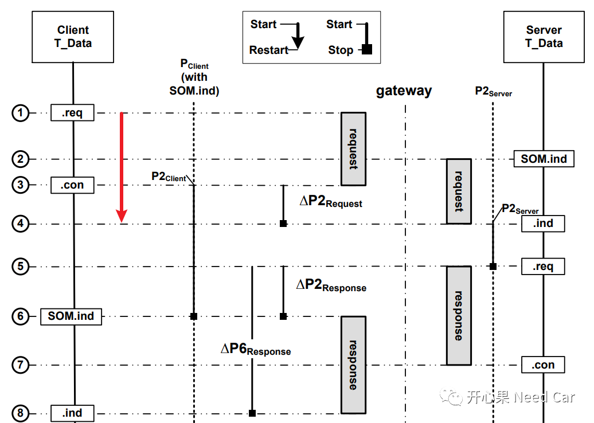
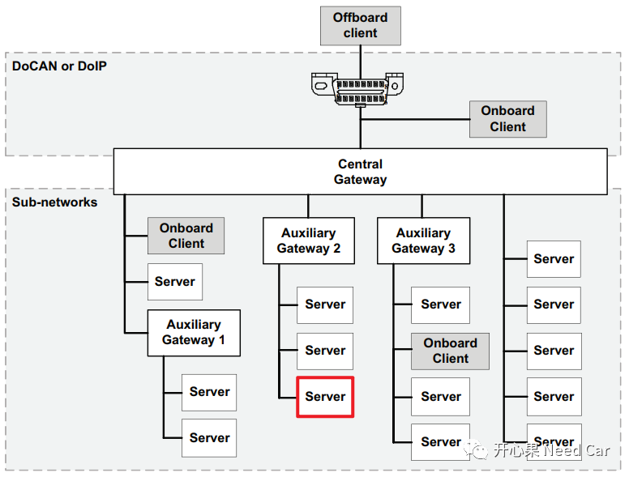
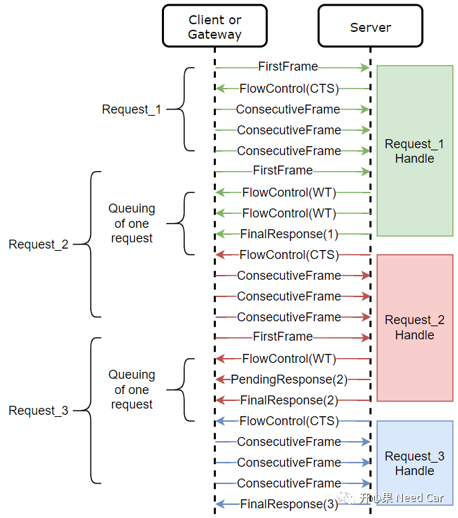

开心果 Need Car · 2022-04-02T13:21:00+08:00 · 微信原文
有没有觉得汽车性价比越来越高，如同手机的变迁史？个人感受：现在的汽车价格越来越亲民，功能也越来越多。当然，这是市场经济问题，车企多了，竞争就激烈了，谁家车性价比高就买谁家的。车辆功能的提升，也意味着单件ECU代码复杂度和代码量的提升。面对代码量的提升，各大OEM都在想方设法地提升ECU的刷写速度，比如：使用速率更快的总线（Ethernet）、平行刷写(Parallel Flash)、队列刷写（Queued Flash）等等。
本文我们聊聊Queued Flash。
队列刷写是如何提高刷写速度的呢？在回答这个问题之前，我们需要先知道，队列刷写是对单个ECU而言的，这种方式不同于并列刷写，并列刷写针对多个ECU。

这样上位机就可以向同一个ECU发送多个诊断请求，而不必等待请求之间的响应问题。
由上图我们也注意到，当网关(Gateway)存在时，上位机的诊断请求需要Gateway转发给需要升级的ECU，这段时间 = ∆P2request。而这个时间会在需求中约束，比如：10ms+10%。
这种通过Gateway更新ECU程序的方式是比较常见的，比如：车辆升级，需要更新某个ECU，一般是通过预留的OBD接口，通过Gateway节点升级目标ECU。不可能为每个ECU预留升级的接口，这样不仅增加整车质量，也会给车辆安全带来隐患。
如下图：需要升级红框中的Server（ECU）时，一条诊断指令从上位机下发到目标ECU，要经过两次路由，即:Central Gateway(中央网关)和Auxiliary Gateway2（子网关），由此可见，当刷写的数据量大时，耗费的∆P2request时间不容小觑。

举例：
我们以刷写过程中的$36服务（Transfer Data Service）为例，分析一下Queued Flash过程。
上位机(tester，诊断指令可能需要通过Gateway路由)向同一个ECU发送诊断请求Request_1（FristFrame）;
当Tester将连续帧传输完成以后，不必等待Request_1的最终响应，即可发送Request_2（FristFrame），就是告诉Server，Request_2你先给我缓存着(Queued);
但是呢，Server缓存归缓存，UDS规矩还得遵守，所以，Server先给Tester回复流控等待(CW)，告诉Tester别急着发送Request_2对应的连续帧，因为Request_1的最终响应还没给出，咱不能乱了诊断请求的顺序；
当Server给出FinalRequest_1以后，Server同时回复Tester流控继续（CTS）命令，Server的意思是：“Tester来吧，我有空了，再给我整Request_2的连续帧”；
Tester发送完Request_2的连续帧以后，顺带着将Request_3的首帧也发送出来，Server再次缓存一帧诊断请求；
...
之后周而复始，将数据刷写完成。

1、队列请求报文针对同一个channel
举例：需要发送诊断请求Request_1和Request_2到ECU1。Request_1和Request_2请求应该对应ECU1的同一个Channel，而不能是两个不同的Channel。如果是两个Channel，也就没有队列刷写的意义了。
2、刷写Flexray总线
使用Flexray总线时，我们知道，Flexray总线有一个冗余通道，即：A/B通道，如果Flexray的全双工打开，两个诊断指令Request_1和Request_2分别通过A、B通道到达目标ECU，且Request_2先于Request_1达到，这是不允许的，这样使得诊断指令的请求顺序发生错乱，最终会导致刷写失败。
3、LIN总线是否有必要Queued Flash
LIN总线的通信速率相对CAN、Flexray、Ethernet总线要慢的多，即使使用Queued Flash方式，其刷写速率也未见得提高多少。对于Queued Flash的刷写速度，最终还得看此单件ECU的速率。
举例：
ECU1支持Ethernet刷写（100Mbps），ECU2支持CAN总线刷写（500Kbps），ECU3支持LIN总线刷写（19200bps）。如果是Ethernet刷写CAN我们还能接受，但是Ethernet转LIN的刷写，即使LIN使用Queued Flash的方式，其刷写时间也难以让我们满意。
......
写在最后
参考资料
ISO/FDIS 14229-1/2:2012(E) .pdf
往期精彩回顾